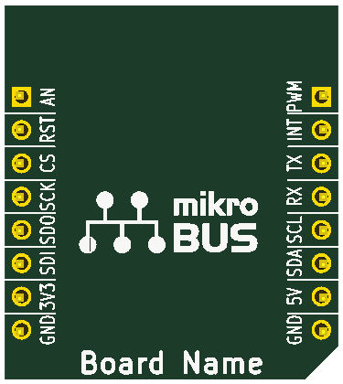

This project template is the basis of a
mikroBUS 'L' size add-on board.
You are allowed to produce your own mikroBUS™ compatible board, as long as you
place mikroBUS™ logo on the board silkscreen. Also, you are not allowed to call
it “Click board” because “Click” is the trademark of mikroElektronika. You are also
not allowed to make commercial version of your board. It would be nice to hear about it,
so send us an E-mail to office@mikroe.com
To download the full mikroBus specification, click
here.
Here is a snapshot of what the mikroBus 'L' PCB looks like:

(c)2015 Casco Logix